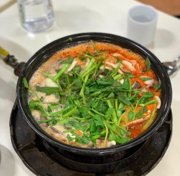
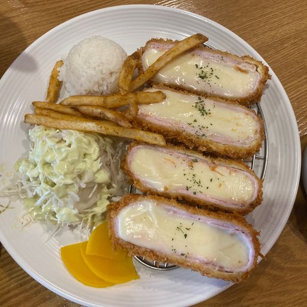

서서울호수공원서울특별시 양천구 신월동에 있는 호수공원이다. 비행기 소음을 활용한 소리분수, 추상 미술기법을 도입한 몬드리안 정원, 100인의 식탁 등이 설치되어 있다. 공원 안쪽으로 들어가 산을 올라가면 풋살장도 있으며, 예약을 하여 이용할수 있다. 평점 4.16/5 |
목동종합운동장1987년 서울특별시 측에서 생활 체육의 저변 확대와 아마추어 야구의 활성화를 목적으로 양천구에 있는 목동신시가지 인근에 지은 종합운동장 평점 4.24/5 |
야키토리토리야서울특별시 양천구 오목로 345 슬로우스퀘어 115호 추천메뉴 : 토리야 오마카세 평점 4.3/5 |
 |
밥초서울특별시 양천구 오목로48길 10 추천메뉴 : 초밥 평점 4.1/5 |
금성수제돈까스서울특별시 양천구 신목로5길 3 추천메뉴 : 기본,매콤 돈까스 평점 4.0/5 |
 |